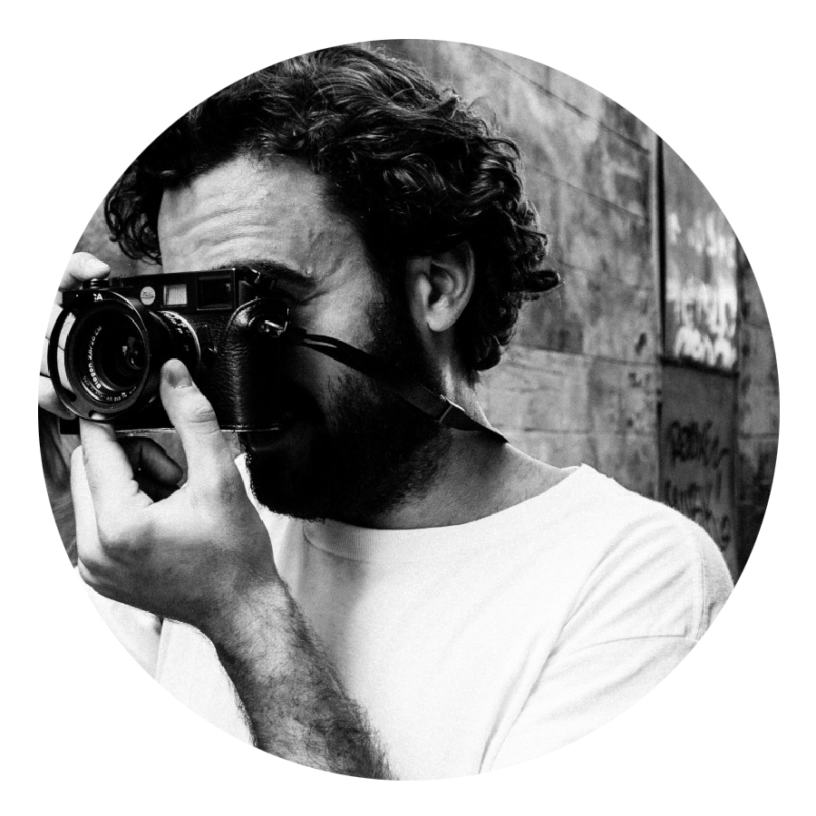
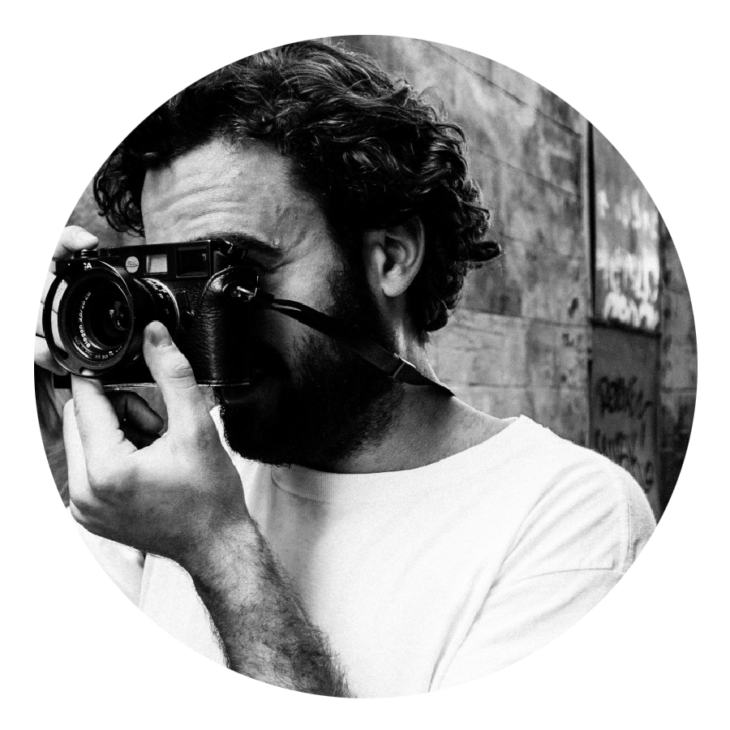

Biographie
 

« En outre à Paris, si l’on fait attention vraiment, on perçoit à chaque pas la pulsation d’un grand coeur sous sa semelle »
Henri Calet
C’est exactement la sensation que je ressens en vagabondant dans les rues de Paris. La sensation d’être au coeur du monde.
Depuis plusieurs années, je transmets ma passion de cette ville à travers la photographie. Mon œil d’expert me permet de déceler le charme intemporel de Paris.
Ayant beaucoup voyagé dans ma carrière, nulle autre ville n’est parvenue à me toucher de cette manière. J’ai donc décidé d’y consacrer mon travail depuis 2015.
J’espère que mes photos vous permettront de tomber sous le charme de Paris, si vous ne la connaissez pas encore.
Retrouvez mon travail sur les réseaux sociaux !